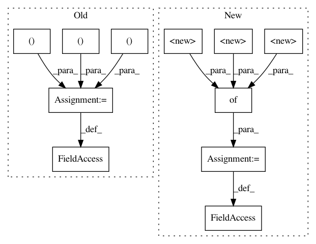

088da65939f97dff12f67db313c3601da925b1bf,tangent/utils.py,,,#,402
Before Change
return {k: add_grad(left[k], right[k]) for k in left}
grad_adders = {
(list, list): add_grad_list,
(dict, dict): add_grad_dict,
(numpy.ndarray, numpy.ndarray): add_grad_numpy,
(numpy.ndarray, float): add_grad_numpy,
(float, numpy.ndarray): add_grad_numpy,
(numpy.ndarray, numpy.float64): add_grad_numpy,
(numpy.float64, numpy.ndarray): add_grad_numpy,
(numpy.ndarray, list): add_grad_numpy,
(list, numpy.ndarray): add_grad_numpy,
(bool, bool): lambda left, right: left or right,
}
def register_add_grad(left_type, right_type, add_grad_function):
Register a new gradient adder supporting the given types.
After Change
// The values are tuples (initializer, allow_lazy_initializer). If
// supports_lazy_initializer is true, Tangent may substitude actual instances
// of the object for the ZeroGradient wrapper, which is a lazy creator.
grad_initializers = {
// TODO: We may be able to use ZeroGradient for ndarrays, too.
numpy.ndarray: (numpy.zeros_like, False),
numpy.float32: (lambda obj: 0.0, False),
numpy.float64: (lambda obj: 0.0, False),
numpy.int32: (init_zero_int, False),
numpy.int64: (init_zero_int, False),
list: (lambda obj: [init_grad(el) for el in obj], False),
tuple: (lambda obj: [init_grad(el) for el in obj], False),
dict: (lambda obj: {k: init_grad(v) for k, v in six.iteritems(obj)}, False),
Stack: (lambda obj: Stack(), False),
float: (lambda obj: 0.0, False),
int: (init_zero_int, False),
bool: (init_zero_bool, False),
}
if hasattr(types, "ClassType"):
grad_initializers[types.ClassType] = (init_common_object, False)
else:
In pattern: SUPERPATTERN
Frequency: 3
Non-data size: 11
Instances
Project Name: google/tangent
Commit Name: 088da65939f97dff12f67db313c3601da925b1bf
Time: 2017-11-29
Author: mdan@google.com
File Name: tangent/utils.py
Class Name:
Method Name:
Project Name: google/tangent
Commit Name: 6b4a4f5c435d53d072055942872dd742248c6b1a
Time: 2017-11-08
Author: mdan@google.com
File Name: tangent/utils.py
Class Name:
Method Name:
Project Name: uber/ludwig
Commit Name: d4617a8be67cf9784161fee75a9a83b0a947974b
Time: 2020-03-21
Author: jimthompson5802@aol.com
File Name: ludwig/features/binary_feature.py
Class Name: BinaryOutputFeature
Method Name: BinaryOutputFeature_2